Neuromatch course
- Notes for NeuroAI course by Neuromatch Academy
1.1.1: Generalization in AI
- TrOCR: Transformer-based OCR model
- some strategies for better generalization: Transfer learning, Augmentations, Synthetic examples
1.1.2: Generalization in Neuroscience
- use RNN to mimic the brain and generate muscle control sequence
- weight regularization (L2) and firing rate regularization for generalization
- \(h\): hidden state, \(x\): input
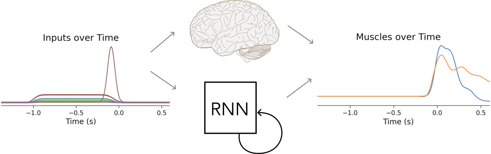
1.1.3: Generalization in Cognitive Science
-
2020, Learning Task-General Representations with Generative Neuro-Symbolic Modeling
- Humans display one-shot learning on Omniglot, a character recognition task. This requires extensive generalization.
- A generative neuro-symbolic model with strong inductive biases exhibits human-level performance on Omniglot.
-
Sample complexity: minimum number of examples needed to reach a specific performance with some probability
1.2.1: Task definition, application, relations and impacts on generalization
classification: cross-entropy loss
regression: MSE loss
auto-encoding: MSE loss
- MSE loss between the original and reconstructed inputs
- auto-encoder consists of: an encoder, a bottleneck layer, and a decoder
- compresses the input into a smaller representation, the bottleneck layer holds this compressed representation, and the decoder reconstructs the original image from this representation
inpainting: MSE loss
- an auto-encoder that can fill in missing parts of an image
1.2.2: Contrastive learning for object recognition
-
contrastive learning (self-supervised)
- works well in situations where the number of classes is large or undefined
- learns to distinguish between 'similar' and 'dissimilar' directly through embeddings
- example: identify faces among billions of possibilities
-
Residual networks:
- easier to optimize: allows for a passageway for gradients to flow down during backprop
-
Noise-Contrastive Estimation with Information (InfoNCE) loss function
- $ x $: anchor data point (an input sample)
- $ x^+ $: transformed / augmented version of $ x $ (similar)
- $ x^- $: randomly sampled from dataset (dissimilar)
- $ s(x, x') $: some similarity function between embeddings of $ x $ and $ x' $
- $ \tau $: temperature
1.2.3: Reinforcement learning across temporal scales
- refer to 2018 Prefrontal cortex meta-RL
1.3.1: Generalization and representational geometry
-
Adversarial data: attacker-designed data that cause models to make mistakes, but indistinguishable by humans
- Fast Gradient Sign Method (FGSM, Ian Goodfellow, 2014): backprops through the NN to create perturbed inputs that maximize the loss. $ x' = x + \epsilon \cdot \text{sign}(\nabla_x L) $
-
Representational Dissimilarity Matrices (RDM)
- $ M_{ij} = 1 - r(h_i, h_j)$, $ r $ is Pearson correlation
- measures how dissimilar the response patterns in some layer of a NN are to the $ i $-th and $ j $-th input
- measure of generalization
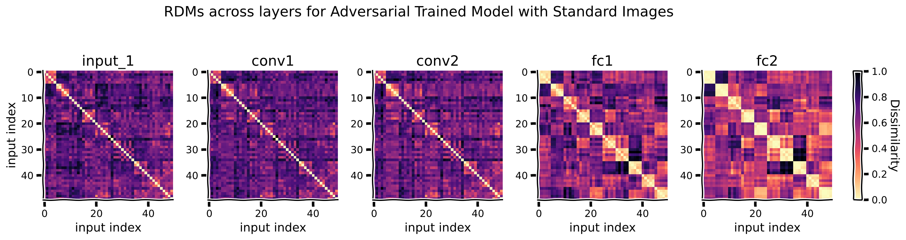
1.3.2: Computation as transformation of representational geometries
- Dimensionality reduction
- PCA (Principal Component Analysis)
- MDS (Multi-Dimensional Scaling)
- t-SNE (t-distributed Stochastic Neighbor Embedding)
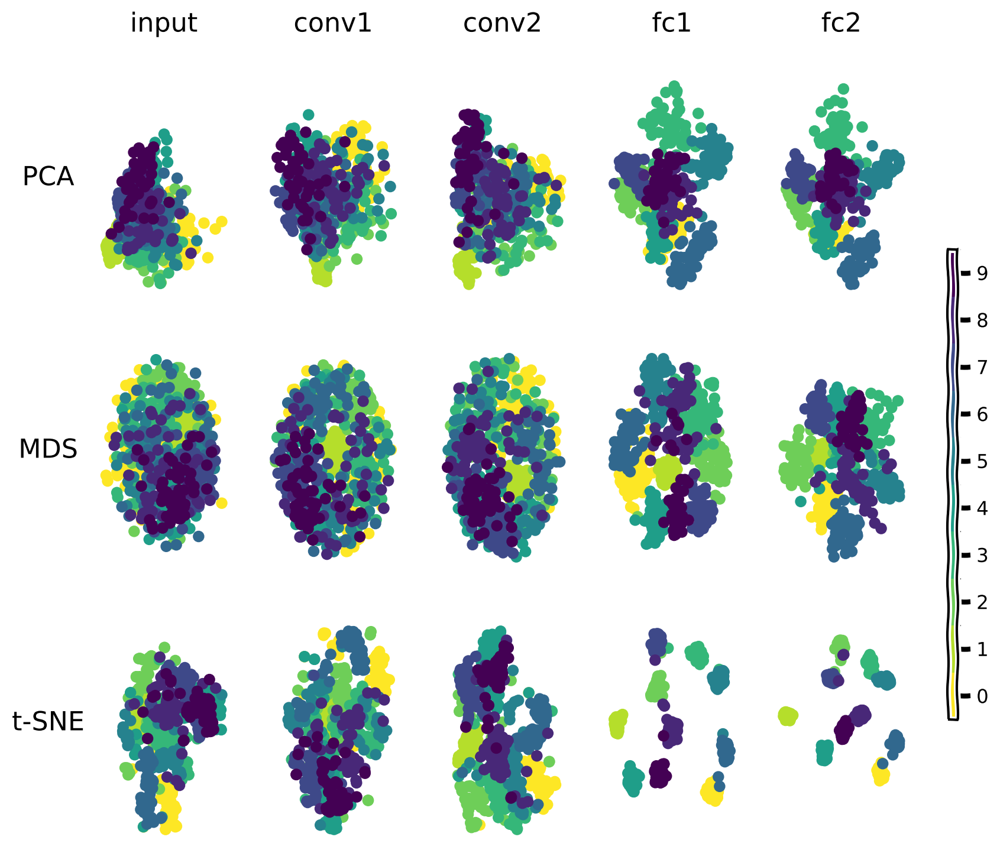
- Representational path: from comparing representations to comparing RDMs
- calculate RDMs based on the Euclidean distances between the representations of inputs (for each layer): $ M(\text{layer}_k, x_i, x_j) $
- reshape: \(K, I, J \rightarrow K, I\times J\), then calculate the cosine similarity between different rows of this new matrix. By taking the
arccosof this measure, we obtain a proper distance between representational geometries of different layers. an RDM matrix of the RDM matrices! - visualize the path: embed the distances between the geometries in a lower dimensional space. use
MDSto reduce the dimensions to 2
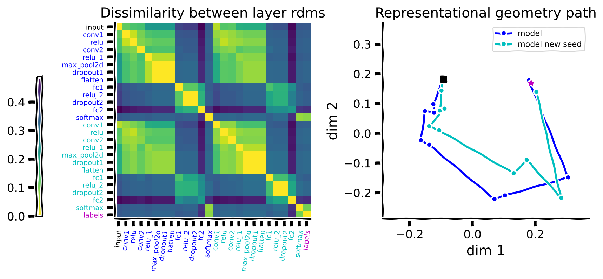
1.3.3: Statistical inference on representational geometries
-
Representational Similarity Analysis (RSA)
- Uses rsatoolbox to compute
Representational Dissimilarity Matrices (RDM), which capture pairwise dissimilarities in neural (fMRI) or model (AlexNet) responses to stimuli - Compares fMRI RDMs with AlexNet RDMs by calculating the
correlation coefficient
- Uses rsatoolbox to compute

1.3.4: Representational geometry & noise
-
Goal: to develop more accurate and robust classification models
-
Euclidean vs Mahalanobis distance
- Mahalanobis takes into account the noise covariances between neurons
- Euclidean assumes isotropic noise
- discriminability between stimulus pairs
- If we assume noise is
i.i.dacross neurons (isotropic) and i.i.d across stimuli (homoscedastic), then Euclidean distance (in response space) defines discriminability between a pair of stimuli - If we assume noise is
correlatedacross neurons (non-isotropic) and i.i.d across stimuli (homoscedastic), then Mahalanobis defines discriminability
- If we assume noise is
-
Linear Discriminant Analysis
- For example, in a two-class problem, LDA finds a line (or hyperplane in higher dimensions) that best distinguishes the classes
-
Cross-validated (train-test split) distance estimators can remove the positive bias introduced by noise
- Johnson–Lindenstrauss lemma:
- states that a set of points in a high-dimensional space can be projected into a lower-dimensional space using a random linear projection (e.g., a random matrix) while approximately preserving the Euclidean distances between the points.
- shows that random projections preserve the Euclidean distance with some distortions. Crucially, the distortion does not depend on the dimensionality of the original space
- crucial for reducing dimensionality while preserving the relational structure of data
1.5.1: Sparsity and Sparse Coding (regularization)
- kurtosis: one of the main metrics used to measure sparsity
from sklearn.decomposition import DictionaryLearning, PCA
from sklearn.linear_model import OrthogonalMatchingPursuit
-
Dictionary Learning: decompose complex data into simpler components, akin to how the visual system breaks down images into edges and textures etc.
-
Orthogonal Matching Pursuit (OMP) algorithm: achieves "sparse coding" by deriving fundamental units (basis) that constitute complex signals
1.5.2: Normalization
- by adding a normalization layer
- the training process converges quicker
- achieve better test accuracy and generalization in image recognition
1.5.3: Attention
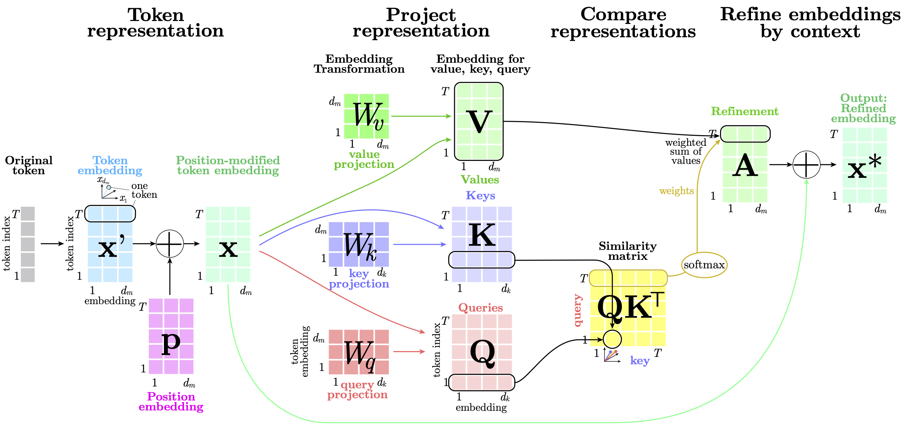
2.1.1: Depth vs width
2.1.2!!!: Double descent (Grokking)
-
- the situation when the over-parameterized network was expected to behave as over-fitted but instead generalized better to the unseen data.
- Moreover, we discovered how noise, regularization & initial scale impact the effect of double descent and, in some cases, can fully cancel it.
- Combining with the findings on sparse connections and activity, brain architecture suggests it might operate in over parameterized regime, which enables the interpolation of vast amounts of sensory and experiential data smoothly, leading to effective generalization.
2022 Grokking
- OpenAI
2.1.3: Neural network modularity
- modular architecture with separate modules for learning different aspects of behavior, is superior to a holistic architecture with a single module. The modular architecture with stronger inductive bias achieves good performance faster and has the capability to generalize to other tasks as well. this modularity is a property we also observe in the brains.
- env: spatial navigation task
- RL: actor-critic
2.2.1: Basic operations of vector symbolic algebra
- these 3 tutorials depends on sspspace (Spatial Semantic Pointers)
- 6 stars in 2 years
- it is related to nengo
- 863 stars in 6 years
- not mainstream AI, also doesn't seem to make much sense / be useful. will be skipped.
2.2.2: Learning with structure
2.2.3: Representations in continuous space
2.3.1!!!: Microlearning (local)
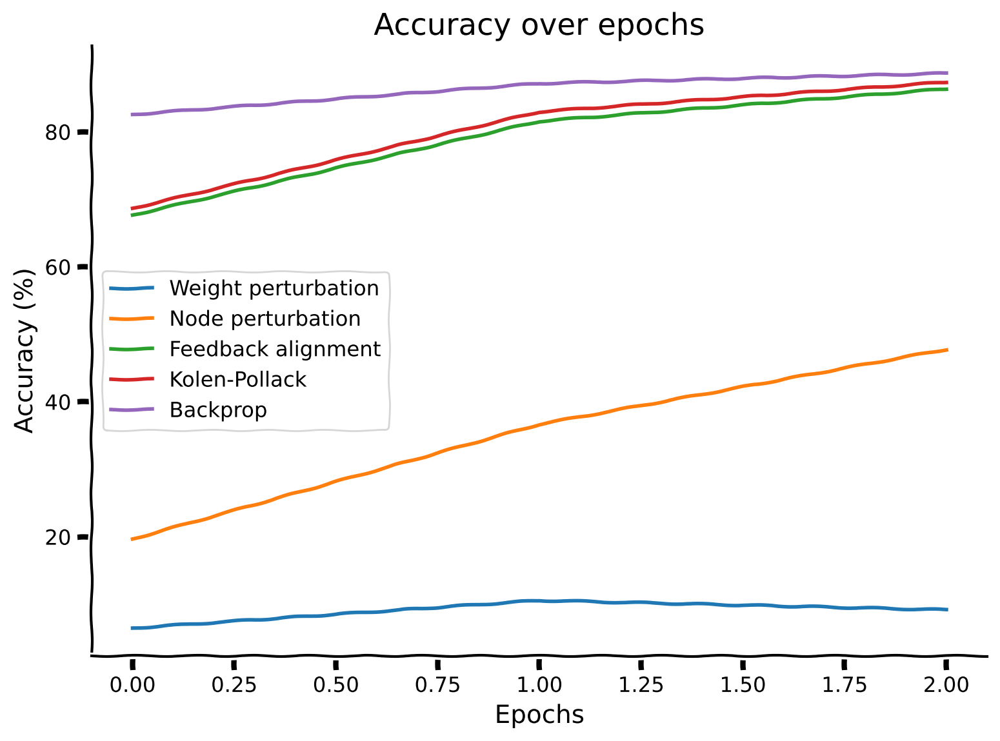
- Weight Perturbation
- Node Perturbation
- Feedback Alignment
- Kolen-Pollack
from typing import List
import matplotlib.pyplot as plt
import torch as tc
import torch.nn as nn
from torch.optim import Adam, Optimizer
class WeightPerturb(Optimizer):
def __init__(s, params, sigma=1e-2, lr=1e-3, K=10):
s.sig, s.lr, s.K = sigma, lr, K
super(WeightPerturb, s).__init__(params, defaults={})
def step(s, get_loss):
l0 = get_loss()
ps: List[tc.Tensor] = [p for g in s.param_groups for p in g["params"]]
p0s = [p.data.clone() for p in ps]
gs = [tc.zeros(p.shape) for p in ps]
for _ in range(s.K):
zs = [tc.normal(0, s.sig, p.shape) for p in ps]
for p, p0, z in zip(ps, p0s, zs):
p.data = p0 + z
lz = get_loss()
for i, z in enumerate(zs):
gs[i] += (lz - l0) * z / s.sig**2
for p, p0, g in zip(ps, p0s, gs):
p.data = p0 - s.lr * g / s.K
return l0
def run_opt(Opt, lr=1e-3):
tc.manual_seed(1)
net = nn.Linear(6, 1)
x = tc.rand((100, 6))
y = tc.mean(x, dim=1, keepdim=True)
loss_fn = nn.MSELoss()
opt = Opt(net.parameters(), lr=lr)
losses = []
def get_loss() -> tc.Tensor:
return loss_fn(y, net(x))
for i in range(1000):
if isinstance(opt, Adam):
opt.zero_grad()
loss = get_loss()
loss.backward()
opt.step()
elif isinstance(opt, WeightPerturb):
loss = opt.step(get_loss)
losses.append(loss.item())
plt.plot(losses, label=opt.__class__.__name__)
if __name__ == "__main__":
run_opt(Adam)
run_opt(WeightPerturb)
plt.legend()
plt.savefig("test")
2.4.1: The problem of changing data distributions
- Covariate shift: $ x $ changes.
- Concept shift: $ f $ changes.
2.4.2: Continual learning
solves catastrophic forgetting
2.4.3: Meta-learning
2017 Model-Agnostic Meta-Learning (MAML)
-
Sergey Levine, Pieter Abbeel
-
ABSTRACT
- In effect, our method trains the model to be easy to fine-tune. We demonstrate that this approach leads to state-of-the-art performance on two few-shot image classification benchmarks, produces good results on few-shot regression, and accelerates fine-tuning for policy gradient RL.
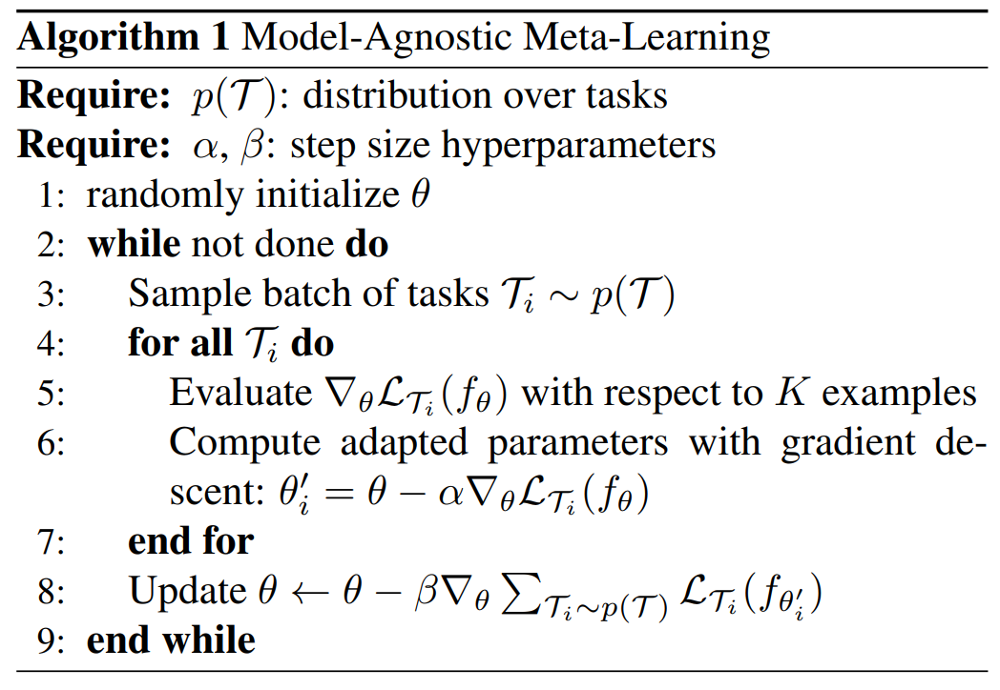 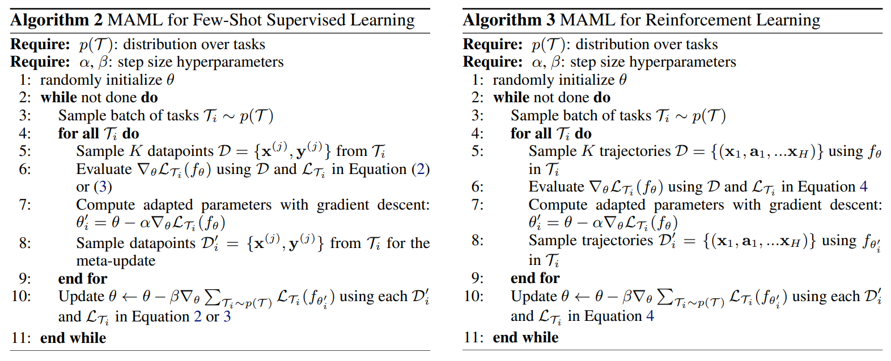
2.4.4: Biological meta reinforcement learning
Advantage Actor Critic (A2C)
- Policy (Actor): selects actions using a policy $ \pi_\theta(a|s) $. Value Function (Critic): estimates the state value $ V_\phi(s) $. Empirical Return (Monte Carlo). Advantage
- Policy Gradient Loss, Value Function Loss, Entropy Regularization
Baldwin effect: meta-learning
-
Baldwin effect
- learned behaviors indirectly shape genetic evolution through natural selection (favoring traits that facilitate learning), rather than implying that acquired skills are directly encoded into genes (Lamarckian)
- we don't inherit the features / weights that make us good at specific tasks but rather the ability to learn quickly to gain the needed features
- evolution will select organisms that are good at learning
-
implementation
- Outer Loop: Genetic Algorithm (finds good initial parameters, those good at learning)
- Inner Loop: Standard RL
- Outer Loop: Genetic Algorithm (finds good initial parameters, those good at learning)
2018 Prefrontal cortex meta-RL
-
Seems this paper lacks detailed mechanistic algorithms / code / math, need to investigate further
-
Demis Hassabis
-
ABSTRACT
- Over the past 20 years, neuroscience research on reward-based learning has converged on a canonical model: dopamine 'stamps in' associations between situations, actions and rewards by modulating synaptic strength. However, a growing number of recent findings have placed this standard model under strain.
- We introduce a new theory where the dopamine system trains the prefrontal cortex, to operate as its own free-standing learning system.
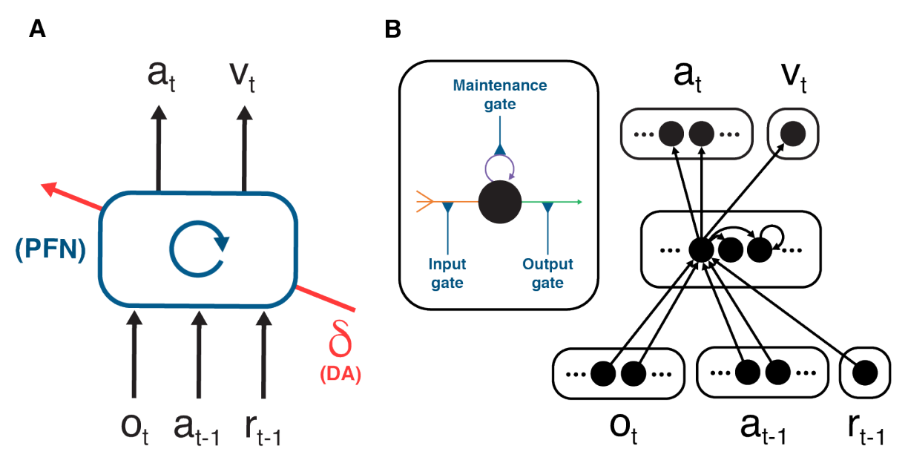
- Architecture: The prefrontal network (PFN), including sectors of the basal ganglia and the thalamus that connect directly with PFC, is modeled as a RNN, with synaptic weights adjusted through an RL algorithm driven by dopamine (DA). o = perceptual input. a = action. r = reward. v = state value. δ = reward prediction error (RPE)
- Learning: As suggested in past research, we assume that the synaptic weights within the prefrontal network, are adjusted by a model-free RL procedure, within which DA conveys a RPE signal. Via this role, the DA-based RL procedure shapes the activation dynamics of the recurrent prefrontal network.
-
Task environment: Following past proposals, we assume that RL takes place not on a single task, but instead in a dynamic environment posing a series of interrelated tasks. The learning system is thus required to engage in ongoing inference and behavioral adjustment.
-
these 3 premises are all firmly grounded in existing research. The novel contribution here is to identify an emergent effect that results when the 3 premises are concurrently satisfied. As we will show, these conditions, when they co-occur, are sufficient to produce a form of meta-learning, where one learning algorithm gives rise to a second, more efficient learning algorithm. Specifically, by adjusting the connection weights within the prefrontal network, DA-based RL creates a second RL algorithm, implemented entirely in the prefrontal network's activation dynamics. This new learning algorithm is independent of the original one, and differs in ways that are suited to the task environment. Crucially, the emergent algorithm is a full-fledged RL procedure: It copes with the exploration-exploitation tradeoff, maintains a representation of the value function, and progressively adjusts the action policy. In view of this point, and in recognition of some precursor research, we refer to the overall effect as meta-reinforcement learning.
2.4.5: Replay Buffer
2.5.1: Consciousness
- Objectives
- the hard problem of consciousness
- phenomenal consciousness vs access consciousness
- consciousness vs sentience vs intelligence
- reductionist theories: Global Workspace Theory (GWT), metacognition, Higher-Order Thought (HOT)
2020 Recurrent Independent Mechanisms (RIM): modularity
-
Sergey Levine, Yoshua Bengio, Bernhard Schölkopf
-
ABSTRACT
- a new recurrent architecture in which multiple groups of recurrent cells operate with nearly independent transition dynamics, communicate sparingly through the bottleneck of attention, and compete with each other so they are updated only at time steps where they are most relevant
- leads to specialization amongst the RIMs, remarkably improved generalization on tasks where some factors of variation differ systematically between training and evaluation
-
RIM vs RNN (LSTM, GRU)
- The RIM cells are sparsely activated, only a subset of them are active at each time step
- cells are mostly independent, do not share weights or hidden states
- communicate with each other through an attention mechanism
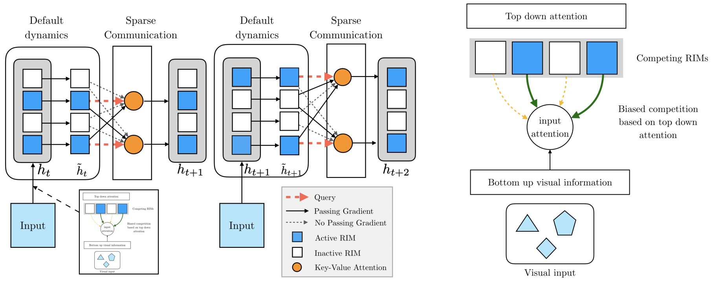
- A single step has 4 stages
- individual RIMs produce a query which is used to read from the current input
- attention is used to select which RIMs to activate
- activated RIMs follow their own transition dynamics
- RIMs sparsely communicate between themselves using attention
2022 Global Workspace Theory (GWT): coordination
-
Yoshua Bengio
-
ABSTRACT
- Deep learning has seen a movement away from representing examples with a monolithic hidden state towards a richly structured state:
- Transformers segment by position
- object-centric architectures decompose images into entities
- In all these architectures, interactions between different elements are modeled via pairwise interactions:
- Transformers make use of self-attention to incorporate information from other positions
- object-centric architectures make use of graph neural networks to model interactions among entities
- We consider how to improve on pairwise interactions in terms of global coordination and a coherent, integrated representation that can be used for downstream tasks
- In cognitive science, a global workspace architecture has been proposed in which functionally specialized components share information through a common, bandwidth-limited communication channel.
- The proposed method includes a shared workspace through which communication among different specialist modules takes place but due to limits on the communication bandwidth, specialist modules must compete for access. We show that capacity limitations have a rational basis in that:
- they encourage specialization and compositionality
- they facilitate the synchronization of otherwise independent specialists
- Deep learning has seen a movement away from representing examples with a monolithic hidden state towards a richly structured state:
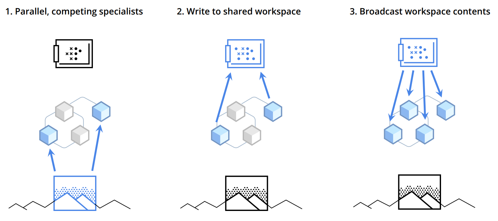
-
workflow
- an ensemble of specialist modules doing their own default processing; at a particular computational stage, depending upon the input, a subset of the specialists becomes active.
- the active specialists get to write information in a shared global workspace.
- the contents of the workspace are broadcast to all specialists.
-
1988GWT of consciousness: consciousness arises from the ability of various brain processes to access a shared information platform, the Global Workspace.
Second order model
-
Blindsight: people with damaged primary visual cortex can still respond to visual stimuli without consciously perceiving them
-
This section defines two neural networks working together:
- FirstOrderNetwork: Processes input data (100D → hidden layer → 100D output).
- SecondOrderNetwork: Compares the input and output of the first network, then outputs a "confidence score" (called a wager) indicating how well the first network performed.
- Main Idea: The system not only makes predictions but also self-evaluates their reliability. The second network acts like a "critic" assessing the first network's performance on each input.
Higher Order State Space (HOSS) model
-
higher-order theory: consciousness stems from the ability to monitor basic, or first-order, information processing activities, instead of merely broadcasting information globally
-
global ignition responses: big surges in brain activity that happen when we become conscious of something